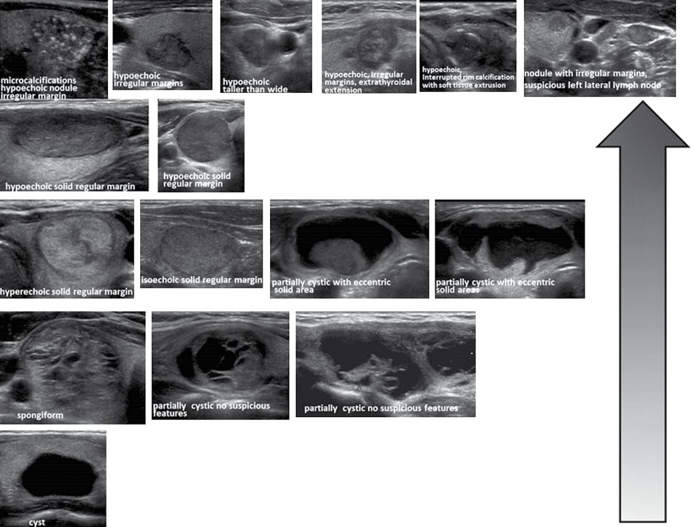

Thyroid Nodules and Goitre
Summary
- Goitre is generalised enlargement of the thyroid gland, while a thyroid nodule is a discrete swelling within it; both are common, most patients are euthyroid, and the principal clinical concern is excluding malignancy [1][2].
- In the UK, 15–40% of people have a palpable goitre and up to half have one detectable by ultrasound, while palpable thyroid nodules occur in 3–5% of the adult population, rising to 19–68% when incidental nodules on high-resolution imaging are included [2][3].
- Assessment is built around ultrasound risk-stratification and fine-needle aspiration cytology (FNAC), reported using standardised systems such as Thy1–5 or the Bethesda System [1][3].
Definition
- Goitre (Latin guttur = the throat) describes generalised enlargement of the thyroid gland [1][2].
- A discrete swelling in one lobe with no palpable abnormality elsewhere is an isolated (or solitary) nodule; a discrete swelling with evidence of abnormality elsewhere in the gland is termed dominant [1].
- Goitre can be classified by epidemiology (endemic, sporadic, familial, drug-induced), morphology (diffuse or nodular, multinodular or solitary), functional status (toxic, non-toxic, hypothyroid) and location (cervical or retrosternal) [2].
Pathophysiology
- Simple goitre develops from stimulation of the thyroid by TSH, either from a rare pituitary microadenoma or, more commonly, in response to chronically low circulating thyroid hormone; the most important factor in endemic goitre is dietary iodine deficiency, while defective hormone synthesis (dyshormonogenesis) accounts for many sporadic goitres [1].
- TSH is not the only stimulus to follicular cell proliferation, other growth factors, including immunoglobulins, also act, and heterogeneous nodularity may reflect clones of cells especially sensitive to growth stimulation [1].
- The natural history of simple goitre progresses through stages: persistent stimulation causes diffuse hyperplasia (reversible if stimulation ceases); fluctuating stimulation then produces a mixed pattern of active and inactive lobules; active lobules become hyperplastic and vascular until haemorrhage causes central necrosis; necrotic lobules coalesce into colloid-filled or inactive nodules; repetition of this process produces a multinodular goitre in which most nodules are inactive and active follicles persist only in internodular tissue [1].
- Goitre is caused by hyperplasia of thyroid follicular tissue from a combination of diet, genetics, iodine deficiency, and environmental and endocrine factors [2].
Clinical features
- Most thyroid swellings grow slowly and painlessly and are noticed incidentally; a lump present for years may suddenly change, e.g. from haemorrhage into a necrotic nodule, fast-growing carcinoma or subacute thyroiditis [4].
- All thyroid swellings ascend on swallowing [1][4].
- Large swellings may cause a tugging sensation on swallowing, nocturnal cough or dyspnoea from tracheal compression (worse when the neck is flexed or the patient lies down), and stridor; pain is uncommon except in acute/subacute thyroiditis or Hashimoto's disease [4].
- Hoarseness suggests recurrent laryngeal nerve (RLN) infiltration by malignancy [4].
- The WHO clinically grades goitre as 0 (not visible or palpable), 1 (palpable), 2 (visible) and 3 (large and visible from a distance) [2].
- Sporadic multinodular goitre (MNG) is the commonest UK presentation, usually an asymptomatic neck mass; compressive symptoms include dysphagia (oesophagus), stridor (trachea), and distended neck veins/facial plethora (venous obstruction) [2]. 'Red flag' features suggesting cancer include rapid growth, hoarse voice, lymphadenopathy, dysphonia, weight loss and signs of metastatic disease [2].
- On examination, nodules in simple goitre are smooth, usually firm and not hard, and the goitre is painless and moves freely on swallowing; hardness and irregularity from calcification may simulate carcinoma, and a painful nodule or sudden enlargement raises suspicion of carcinoma but is usually haemorrhage into a simple nodule [1].

Etiology
- The daily iodine requirement is about 0.1–0.15 mg; endemic goitre occurs in low-iodide regions such as the Rocky Mountains, Alps, Andes, Himalayas, and parts of Derbyshire and Yorkshire in the UK, and in lowland areas with iodine-poor soil or water (e.g. the Great Lakes, plains of Lombardy, Nile Valley, Congo) [1].
- Calcium is also goitrogenic and goitre is common on chalk or limestone soils [1].
- Enzyme deficiencies (dyshormonogenesis) cause many sporadic goitres, often with a family history; environmental iodine intake can compensate or worsen a metabolic predisposition [1].
- Known goitrogens include brassica vegetables (cabbage, kale, rape, thiocyanate), para-aminosalicylic acid, and antithyroid drugs (carbimazole, thiouracil), which interfere with iodide trapping or organification; paradoxically, excess iodide is also goitrogenic (iodide goitre) [1].
- In the developed world the most common causes of goitre/hypothyroidism are autoimmune thyroiditis and iatrogenic causes (thyroidectomy or radioactive iodine without adequate replacement), while iodine deficiency dominates in the developing world [3].
- The ABSITE Review notes the most identifiable cause of goitre is iodine deficiency (treated with iodine replacement), while the most common cause in the U.S. is low-grade TSH stimulation producing nontoxic colloid goitre [5].
Diagnosis
- Essential investigations are serum TSH (with T3/T4 if abnormal), thyroid autoantibodies, and FNAC of palpable discrete swellings; optional tests include corrected serum calcium, serum calcitonin, and imaging (chest radiograph/thoracic inlet for retrosternal extension, ultrasound/CT/MRI for known cancer or retrosternal goitre, isotope scan if toxicity and nodularity coexist) [1].
- Ultrasonography is the surgeon's workhorse investigation, assessing gland substance, regional lymphatics and nodule features (number, size, shape, margins, vascularity, microcalcification) that predict malignancy risk, and allows image-guided FNA [1][3].
- About 70% of discrete thyroid swellings are clinically isolated and 30% dominant; some 15% of isolated swellings prove malignant and a further 30–40% are follicular adenomas [1].
- Isotope scanning is now reserved for the toxic patient with a nodule or nodularity, differentiating a toxic nodule (suppressed remainder of gland) from toxic multinodular goitre (multiple areas of uptake) [1].
- FNAC is the investigation of choice for discrete swellings and should be performed, ideally under ultrasound guidance, on all nodules not fulfilling a fully benign ultrasound classification; it reliably identifies papillary thyroid carcinoma but cannot distinguish follicular adenoma from carcinoma cytologically [1].
- Core biopsy is rarely used owing to thyroid vascularity, but may help in rapid diagnosis of widely invasive disease such as anaplastic carcinoma [1].
- Flexible laryngoscopy is used preoperatively to assess vocal cord mobility, as a unilateral cord palsy with an ipsilateral nodule of concern is usually diagnostic of malignancy [1].
- Over 30% of clinically isolated swellings are cystic on FNAC/ultrasound; about 55% of cystic swellings result from colloid degeneration, while 10–15% of cystic follicular swellings are histologically malignant (30% in men, 10% in women) [1].
- ATA (2015) guidelines base FNA decisions on a five-tier sonographic pattern (high, intermediate, low, very-low suspicion, and benign) with size cut-offs for biopsy; the alternative ACR TI-RADS system stratifies nodules TR1 (benign) to TR5 (highly suspicious) using a points system across composition, echogenicity, shape, margin and echogenic foci [3].
- Neither system recommends routine FNA of nodules <1 cm [3].
- An asymptomatic thyroid nodule should undergo ultrasound-guided FNA (best initial test, generally performed for nodules ≥5 mm) plus thyroid function tests; FNA is diagnostic in about 80% of cases [5].
- Cold nodules on scan are more likely malignant than hot nodules, although the majority (80%) of 'cold' swellings are still benign and around 5% of 'warm'/functioning swellings prove malignant [1][5].


Scoring and Severity
- FNAC is reported using standardised terminology.
- The UK Royal College of Pathologists' Thy classification comprises Thy1 (non-diagnostic), Thy1c (non-diagnostic cystic), Thy2 (non-neoplastic/benign), Thy3 (follicular; subdivided into Thy3a cellular atypia and Thy3f follicular neoplasm), Thy4 (suspicious of malignancy) and Thy5 (malignant) [1][2].
- In the USA, the Bethesda System for Reporting Thyroid Cytopathology (updated 2023) defines six categories with associated malignancy risk and management: Nondiagnostic (I, 5–20% risk, repeat FNA); Benign (II, 0–7%, clinical/sonographic follow-up); Atypia of undetermined significance (AUS, III, 6–30%, repeat FNA/molecular testing/lobectomy); Follicular neoplasm (FN, IV, 17–34%, molecular testing or lobectomy); Suspicious for malignancy (V, 58–83%, near-total thyroidectomy or lobectomy); and Malignant (VI, 94–100%, near-total thyroidectomy or lobectomy) [3].
- The ATA sonographic risk system stratifies nodules as high suspicion (70–90% malignancy risk, FNA ≥1 cm), intermediate suspicion (10–20%, FNA ≥1 cm), low suspicion (5–10%, FNA ≥1.5 cm), very low suspicion (<3%, consider FNA ≥2 cm) and benign (<1%, no biopsy needed) [3].
- The 'rule of 12' expresses malignancy risk in a thyroid swelling as a function of whether it is isolated versus dominant, solid versus cystic, and male versus female [1].
- WHO clinical goitre grading (0–3, described above under Clinical features) is used to describe severity of enlargement rather than malignancy risk [2].
Treatment and Management
- Most patients with multinodular goitre are asymptomatic and do not require operation [1].
- In endemic areas, goitre incidence has been strikingly reduced by iodised salt; early hyperplastic goitre may regress with thyroxine 0.15–0.2 mg daily for a few months [1].
- Levothyroxine is indicated for hypothyroid goitre and may reduce size by reducing TSH drive, including in iodine-deficient goitre; TSH-suppressive therapy reduces goitre size in around 30% of patients but carries risks of subclinical hyperthyroidism on the heart and bone with long-term use [2][3].
- Radioactive iodine (RAI, ¹³¹I) can reduce non-toxic goitre size by up to 50%, may require repeated doses, and risks include radiation thyroiditis, temporary thyrotoxicosis and late hypothyroidism [1][2][3].
- Surgery is indicated for nodular goitres with features suggesting malignancy, pressure symptoms once other causes are excluded, cosmesis, local compressive symptoms, substernal extension, or patient preference [1][2][3].
- More than half of benign nodules regress in size over 10 years even though the nodular stage of simple goitre is irreversible [1].
- Elderly patients with incidentally discovered, slow-growing retrosternal goitre are often observed rather than treated prophylactically, balancing risk and benefit [1].
Surgeries
- All thyroid operations are built from three elements: total lobectomy, isthmusectomy and subtotal lobectomy; total thyroidectomy = 2 × total lobectomy + isthmusectomy, subtotal thyroidectomy = 2 × subtotal lobectomy + isthmusectomy, near-total thyroidectomy (Dunhill procedure) = total lobectomy + isthmusectomy + subtotal lobectomy, and lobectomy = total lobectomy + isthmusectomy [1].
- Total and near-total thyroidectomy do not conserve enough tissue for normal function, so lifelong thyroid replacement is required; in two-thirds of patients with negative antithyroid antibodies, one retained lobe maintains normal function [1].
- Subtotal resection for colloid goitre risks later regrowth of the remnant, increasing the risk to the RLN and parathyroids at reoperation; in young patients total thyroidectomy is generally preferred, or lobectomy on the more affected side leaving the other lobe untouched for straightforward future lobectomy if needed [1].
- Hemithyroidectomy is feasible for largely unilateral disease and avoids long-term hypothyroidism in up to 85%; total thyroidectomy is required for bilateral disease and removes the risk of recurrence, but mandates postoperative levothyroxine [2].
- Subtotal thyroidectomy is associated with an unacceptably high long-term recurrence rate (>50% in some studies), so total or near-total thyroidectomy is now generally preferred over subtotal resection [3].
- The vast majority (>95%) of retrosternal goitres can be removed transcervically; a longer incision, mobilisation of sternomastoid from strap muscles, and division of ligamentous tissue between the clavicular sternal heads may aid delivery of the gland.
- Conversion to sternotomy is more likely with malignant disease, revision surgery, posterior mediastinal extension, or when goitre diameter exceeds the thoracic inlet [1].
- Most substernal goiters extending no lower than the aortic arch can be resected via cervical incision; those extending further inferiorly, posteriorly, or crossing the midline from the dominant side may require partial or total median sternotomy, with thoracic surgery assistance [3].
- Subtotal thyroidectomy for a nontoxic colloid goitre carries decreased risk of RLN injury compared with total thyroidectomy [5].
- If the gland is fixed, immobile, or too large to deliver through a cervical approach, midline sternotomy is performed [1].

Complications
- Tracheal obstruction may occur from gross lateral displacement or compression by retrosternal extension of a goitre, and acute respiratory obstruction may follow haemorrhage into a nodule impacted in the thoracic inlet [1].
- Transient secondary thyrotoxicosis occurs in up to 30% of goitre patients [1].
- Post-thyroidectomy complications include RLN injury (bilateral injury may require emergency tracheostomy), haemorrhage/haematoma (open the neck and evacuate emergently to prevent airway compromise), and hypocalcaemia from parathyroid injury or devascularisation [2][5].
- Complications of thyroidectomy include RLN injury, hypocalcaemia (particularly after total thyroidectomy), and haemorrhage [2].
Prognosis
- Simple/multinodular goitre carries a good prognosis in most patients, who remain asymptomatic and euthyroid without needing surgery; the nodular stage is irreversible but more than half of benign nodules regress in size over 10 years [1].
- Reoperation for recurrent nodular goitre is more difficult and hazardous than primary surgery, which is why an increasing number of surgeons favour total thyroidectomy in younger patients at the outset [1].
- An increased incidence of cancer (usually follicular) has been reported from endemic goitre areas, and dominant or rapidly growing nodules in longstanding goitres should always be biopsied [1].
References
- Bailey & Love's Short Practice of Surgery, 28th ed., Ch. 55
- Oxford Handbook of Clinical Surgery, 5th ed., Ch. 7 Endocrine surgery
- Sabiston Textbook of Surgery, 22nd ed., Ch. 73 The Thyroid
- Browse's Introduction to the Symptoms and Signs of Surgical Disease, 6th ed., Ch. 12
- The ABSITE Review, 2022, Thyroid chapter